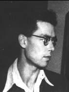
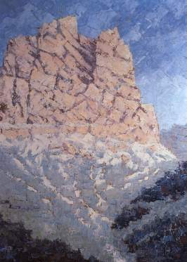

Über der Mensch Max Prantl
Er wurde am 6. November 1912 in Innsbruck geboren und wuchs im heutigen Innsbrucker Stadtteil Mühlau auf, damals noch selbständige Gemeinde. Zur Zeit von Prantls Geburt kehrte Georg Trakl hin und wieder im Gasthaus ‘Dollinger’ zu, das von Prantls Eltern betrieben wurde. Daran mag heute der dem Gasthaus gegenüber, am Inn gelegene ‘Trakl-Park’ erinnern.
Im Innsbrucker Gymnasium Angerzellgasse fiel Prantls Mehrfachbegabung auf, die sich freilich um den Preis einer dauerhaften Kränklichkeit, unter anderem auch eines Asthmaleidens, ausbildete. Seine schwache Gesundheit hinderte ihn am Medizinstudium, das er auch noch in den Kriegsjahren anstrebte. Ein einsames Leben, abseits von Geleisen zum bürgerlich-beruflichen Erfolg, blieb ihm vorbehalten. Desto mehr gab er sich seinen Neigungen hin: dem Schreiben, dem Malen, dem Musizieren. Er komponierte und konnte hinreißend improvisieren. In den dreißiger Jahren besuchte er die Malschule von Tony Kirchmayr gleichzeitig mit Max Weiler, Hilde Nöbl und Ilse Glaninger. An der Universität besuchte er Max Esterles Kurse über ‘Technologie und Geschichte der Malerei’.
Während des Krieges konnte er sich vorübergehend an der Akademie der Künste in Karlsruhe einschreiben, wohin er als ‘garnisonsverwendungsfähig Heimat’ einberufen war und hauptsächlich Schreibtischarbeit versah. Mit dem letzten Aufgebot wurde er Ende 1944 an der Ostfront eingesetzt und im Frühjahr schwer verletzt. Es wurde ihm ein Ellbogen zerschmettert, es kam zu Eiterungen und Wundfieber: der Arm blieb steif. Er geriet in tschechische Kriegsgefangenschaft, deren Entbehrungen - selbst das Gras neben den Baracken war abgerupft und aufgegessen - ihn dem Tode nahebrachten. Die Amerikaner, die das Lager übernahmen, pflegten ihn halbwegs wieder gesund. Im Herbst 1945 kehrte er heim.
Es folgten Jahre intensiver Arbeit, als gälte es, einer an sich selbst ausgegebenen Devise nachzukommen: ‘Ich ging durch eine Hölle, doch hat sie mich nicht verzehren können. Mein Dank dafür soll rastloses Schaffen sein.’ Was er vor dem Krieg gemalt hatte, vernichtete er. 1949 erschien sein Buch ‘Der Mensch ohne Angst. Licht aus der Herzmitte’, entstanden aus Briefen, in denen Max Prantl dem Arzt am Zeileis-Institut in Gallspach, Dr. Paul Bargehr, seine mystischen Erfahrungen und den Sinn seiner irdischen Sendung mitteilte.
Zu den radikalen Ansprüchen, die im Buch und in anderen Schriften Prantls - viele auch Fragen der Astrologie gewidmet (in: ‘Astrologie als Tiefenpsychologie und Seelenheilkunde’, Turm-Verlag 1967, längst vergriffen) - erhoben sind, kontrastiert auffallend dessen äußere Erscheinung, soweit sie uns aus Berichten heute faßbar ist. Als ‘einfach, bescheiden, anspruchslos’ schildert ihn seine jüngere Schwester Elisabeth.Paula Schlier, Mitarbeiterin am ‘Brenner’, beschreibt ihn als einen 'hochgewachsenen, schönen Menschen mit seinen anormal großen Augen, die an die Augen der Kaiser und Heiligen auf Bildern der byzantinischen Kunst erinnerten’.

Der äußere Erfolg seines künstlerischen Bemühens entsprach zu Lebzeiten nicht dem rast- und restlosen Einsatz dieses Maler-Dichters.Von Prantls ‘Märchen’ sind nur zwei in Zeitschriften veröffentlicht worden. Der gesamte Zyklus, den Prantl nach dem Krieg zu einem ‘Mythenkreis’ zusammenfaßte, wurde zusammen mit einigen Bildern erst 1990 von Haymon-Verlag in einem Band herausgegeben (Titel: 'Aus dunklen Talen').Einige der Bergbilder hingen früher in den Räumen des Gasthauses ‘Dollinger’ und tragen teilweise Spuren von Schießübungen von Besatzungssoldaten. Einige andere Bilder wurden später bei einem Zimmerbrand geschädigt, und zeigen dort, wo früher lebendige Farben waren, manche blassen Stellen auf.
Von den Blumenbildern ist 1949 eine Mappe mit Reproduktionen erschienen.Gottfried Hohenauer schrieb darüber: ‘Auch wenn man den Maler Max Prantl nicht als den Autor des Buches ‘Der Mensch ohne Angst' kennen würde, so würden die Bilder doch auf den ersten Blick verraten, daß der Künstler einer hinter den Dingen liegenden Welt zugehört. Nicht Blumenbilder in landläufigem Sinn werden hier vor uns ausgebreitet, die Pflanzengebilde Prantls sind gleichsam Schlüssel zu phantastischen Räumen, die sich hinter ihnen öffnen, oder Materialisationen eines blendenden Licht- und Farbenplasmas, das aus dem Bildzentrum seine Strahlen aussendet oder flocken- und nebelartig in den Raum tastet.’
Ein einziges Mal trat der Maler Max Prantl in ein grelleres Licht der Öffentlichkeit, als im Oktober 1948 eine Ausstellung junger österreichischer Künstler im Wiener Künstlerhaus stattfand. Unter den Tiroler Teilnehmern wurden Alfred Hochschwarzer, Max Weiler und Max Prantl mit Preisen bedacht.‘Der da und kein anderere’, soll der Juror Herbert Boeckl gesagt haben, wobei er auf Prantls Bilder deutete.(Welche es genau waren, wissen wir nicht.) Seither hat man, wenn es um den Maler und Schriftsteller Max Prantl ging, eher weggeschaut.
Seit etwa 1953 war Max Prantl 'sehr krank'. Umstehende hatten das Gefühl, seine Seele, die er als Lichtwesen sah, wolle in dem Körper schon zu Lebzeiten nicht mehr wohnen. Die Angriffe auf sein Buch haben bestimmt zermürbend gewirkt, auch daß seine Bilder in Ausstellungen nicht mehr gehängt wurden, wenn er sie zur Verfügung stellte. Er starb am 21.Februar 1957 undliegt in Mühlau, links vom Eingang in die Pfarrkirche, begraben. Anläßlich des Todes fand Ludwig von Ficker zu einer recht doppelsinnigen Würdigung:
‘Diese wenigen Begegnungen hinterließen in mir den Eindruck eines ungewöhnlich begabten, ungemein rücksichtsvollen und zu heroischer Selbstentsagung befähigten Menschen: Eigenschaften, die heute nicht mehr oft anzutreffen sind. Seine Erscheinung stand mir daher, auch wenn sie meinem Gesichtskreis entschwand, im Geiste immer als eine Art Opferträger am Rande der Wahrheit nahe. Als solchen mußte ich ihn lieben und die Würde, mit der er sein schweres Schicksal trug, bewundern.’
Persönliche Briefe lassen im Hinblick auf die künstlerische Tätigkeit große Zuversicht erkennen. 1. März 1944: ‘Es wurlt in mir von Gedanken und Plänen’, sodaß er ‘fast den Boden unter den Füßen’ verliert. Die Pläne betreffen die Herstellung von Arbeiten, an denen Schreiben, Malen und Musik gleichermaßen Anteil haben sollten.Es werde ihn ‘dieser Dreifrontenkrieg durchs ganze Leben begleiten’.Einige Verse von 1943 zeigen, daß Leitmotive angeschlagen sind, die erst nach dem Krieg, in den Dolomitenbildern, zum Tragen kommen sollten:
Einst war es Mitternacht: O Todesgluten! Nun bricht ein Morgen auf, der an den Grenzen wacht: Im niegesehnen Lichte krönen sich die Fluten. Raumlose Ferne weitet ihre Bogen, bis sie in Glanz und Glimmen niedertaucht, weithin sich heben aus den Nebelwogen goldhelle Zinnen, frühlichtüberhaucht, ins Wesenlose sich breiten blaudunkel dämmernde Seen, ewige Gärten sich weiten, im werdenden Morgen stehn, und Rosen ins Sonnige gluten, schimmernde Düfte wehn; Ströme ins Ewige fluten und tosend im Licht vergehn. Über den Todestalen stolz eine Zinne erblaut, Krone der Morgenlichtströme, ins ewige Werden gebaut.
‘Und stell Dir die Bilder vor’, schreibt er am 25. November 1943, ‘die auf ihre Verwirklichung warten (die werden wohl in engem Anschluß an meine Dichtungen stehen, z. B. das Bild, wie Winnimunth am Bergsee steht (‘sie stand im webenden Abendlicht und der Teufel starrte sie an. Von der Höhe loderten die Felsenzinnen…’). Dazu der See und die Blumenhalden! Das ganze Werk müßte durch so ein Bild verklärt werden.’
Alles, was den inneren Zusammenhang der Bilder und Mythen ausmacht, ist als Wunsch-Vision schon vorweggenommen. Doch hat dieser Optimismus - Zeichen des Schöpferischen im Aufstau und Durchbruch - etwas fiebrig Aufgehitztes. Er läßt Schmerz aus einer inneren Versehrung und die Tragik einer Selbstverzehrung in der Tiefe ahnen, die möglicherweise schon nicht mehr rückgängig zu machen war.Man glaubt zu spüren, daß einer da sein nicht allzu fernes Ende voraussah und als ‘täglichen Tod’ handhabte.
Daran war gewiß nicht nur die in diesen Jahren wachsende Einsicht schuld, daß die Reichsidee Adolf Hitlers, auf die Prantl vorerst alles gesetzt hatte, in Wirklichkeit eine ‘gegen die allgemeinen Naturgesetze’ gerichtete Vermessenheit sei. In einem Drama, das gleichzeitig mit den Märchen entstand und Max Prantls Gesinnungswandel über mehrere Fassungen hin festhält, ist Roosevelt, als ‘wahrer Vertreter des Juden- und Freimaurertums’, der ‘hochmütige Welterlöser Lucifer’, Churchill der ‘zynisch-lebenskräftige Belial’, Stalin der ‘eiskalte Würger’. Hitler aber erscheint - noch maskenhaft - als der Ärgste, weil er das Schlechte von allen dreien auf sich vereint hat. ‘Ich wurde von diesen Gedanken umhergerüttelt, daß ich fast den Verstand verlor’, gesteht Prantl am 31. August 1944.Die apokalyptische Situation erfaßte ihn mit aller Vehemenz.
‘Es war tatsächlich so: Gespenster fahren zur Totenwacht in sturmesächzender Wiege, Es starrt hinauf in die Mitternacht zertrümmerter Tempel Gefüge.’
Äußerungen gegen Ende des Jahres 1944 lassen erkennen, aus welcher Nacht der Seele Max Prantl die Lichtvisionen sowohl der Märchen als auch der später gemalten Bilder gehoben hat: ‘Ich kann doch nie haltmachen und eine ruhige Stätte finden. Von allem, dem ich anhing, mußte ich mich doch immer wieder trennen. Das war mit Weltanschauungen so, mit Freunden und mit meinen eigenen Werken. (...) Aber heute glaube ich zu wissen, daß ich meine Ahasver-Natur doch nie werde ablegen können. (...) Aus dieser Unruhe und Heimatlosigkeit heraus muß ich ja auch schaffen. Ich glaube, der Teufel in Winnimunth ist mein getreuestes Ebenbild und der Schluß des Märchens steht auch nicht zufällig dort. Eine Winnimunth von Fleisch und Blut würde wohl meine Dornen nicht so aushalten.’ (4. Oktober 1944) ... ‘Und doch ist es mir oft so, als wärs knapp vor Sonnenuntergang. Aber Du kannst Dich trotzdem darauf verlassen, daß ich im Seelischen und Geistigen alles tun werde, um doch später weiterschaffen zu können. Denn jeder Untergang kommt zuletzt aus dem Bereich des inneren Selbst und ist niemals Zufall.’ (29. Oktober 1944)